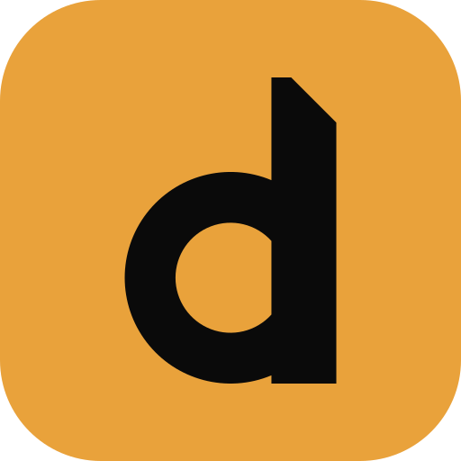
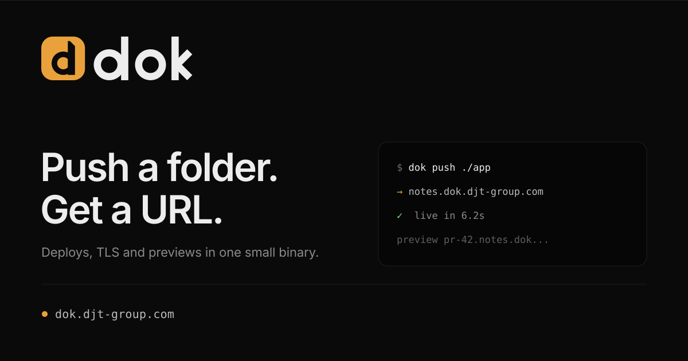

A self-hosted deploy platform in one small binary. The identity is built the same way the product is: rounded tiles, hard hairlines, one warm signal and a single 45° cut.
A rounded square is what the dashboard shows for every app. Take the `d` out of it and you have the mark. It is a knock-out, so it needs no background plate.
| tile | 2 → 30, radius 7.4 (26.4%) |
|---|---|
| bowl | Ø 15, stroke 3.6, counter Ø 7.8 (flat right) |
| stem | x 19 → 23.6, baseline 26.6, top 4.9 |
| chamfer | 45°, 3.2 units on the top-right corner |
| margins | 6.6 / 6.4 / 2.9 / 3.4 inside the tile |
| clear space | ¼ of the mark height (8 units) |
| minimum | 16px — below 24px use favicon.svg |
k terminals and nowhere else.
Same vector source at 128, 64, 48, 32, 24 and 16px. No redraws, except the 16px favicon build.
The carved 45° inner edge of the tile is the only large black shape — it lets the d pick up the background.
Hand-drawn paths on the mark's grid: x-height 18, ascender 25.4, weight 4.2. Spacing is optical, not mathematical.
currentColor; nothing is baked in.7.2 units of clear space. Nothing else between the tile and the word — no divider, no dot.
Amber carries every live state. Text on amber is always near-black. Neutrals come straight from the dashboard's stylesheet.
running, which becomes the signal: #E3B341 → #E9A23B.Topbar: 20px mark, 15px wordmark, 8px gap. Login: 40px mark above the heading. Amber is reserved for live and primary.
Passkey — Proton Pass, iCloud or a hardware key
No passwords. Ever.
The favicon trades the chamfer for weight so it survives 16px. The app icon keeps the full geometry on an amber field.


The mark has no effects and no second colour. If a layout needs the mark to shout, the layout is wrong.